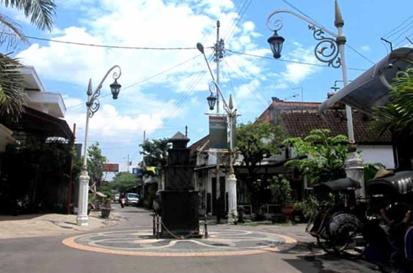

-
Lawang Sewu Semarang
Informasi Tentang Lawang Sewu Semarang
2 -
Kota Lama Semarang (Little Netherland)
Informasi Tentang Kota Lama Semarang
2 -

Keraton Kasunanan Surakarta Hadiningrat Solo
Informasi Tentang Keraton Kasunanan Surakarta Hadiningrat Solo
8 -

Kampung Batik Laweyan di Solo
Informasi Tentang Kampung Batik Laweyan di Solo
2 -

Taman Nasional Karimunjawa di Jepara
Informasi Tentang Taman Nasional Karimunjawa di Jepara
2